My Gallery
1 / 18
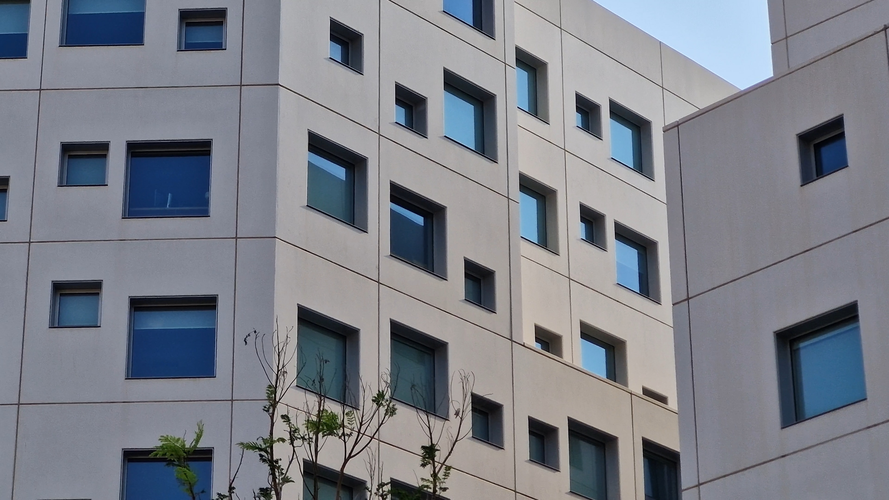
The boxy architecture of residential buildings visible from outside the Arts Center
2 / 18
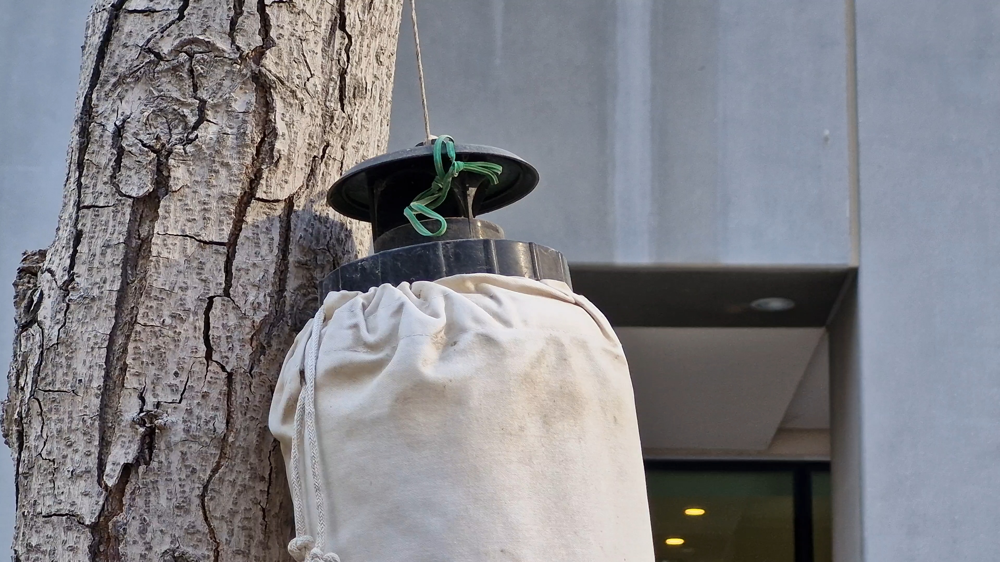
An insect trap hanging on a tree, likely for research purposes
3 / 18
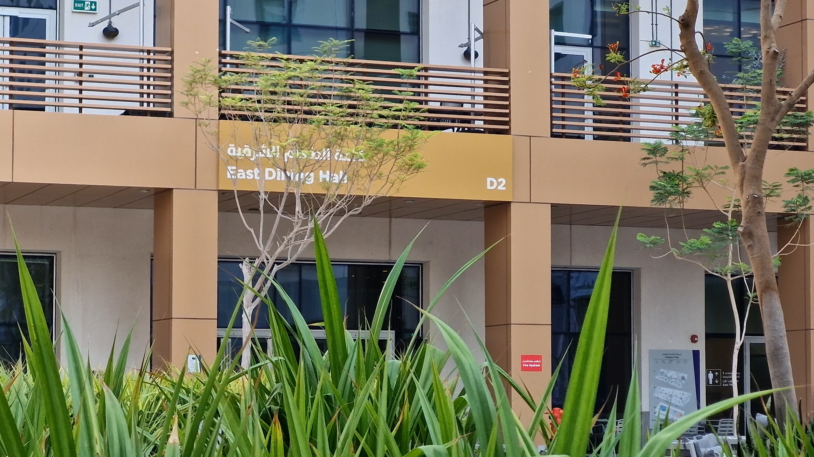
The East Dining Hall, lovingly known as D2, located adjacent to the Arts Center
4 / 18
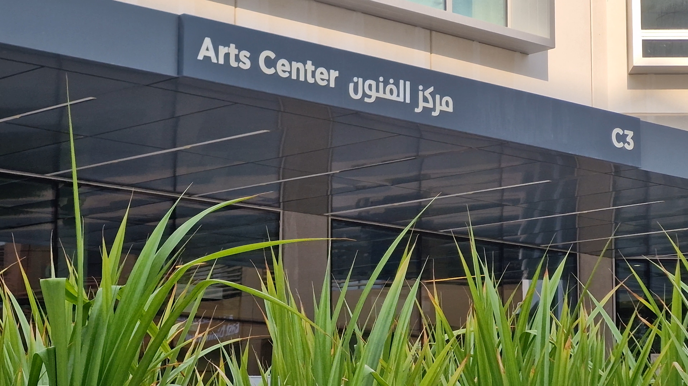
Need I say more?
5 / 18

A gallery of posters of performances hosted in the Arts Center over the years
6 / 18
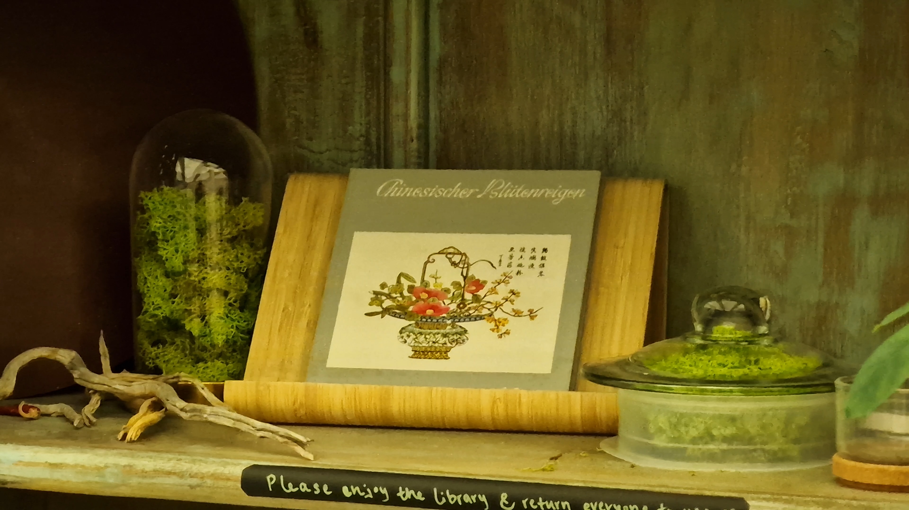
Moss terrariums in the Reading Corner at the Arts Center
7 / 18
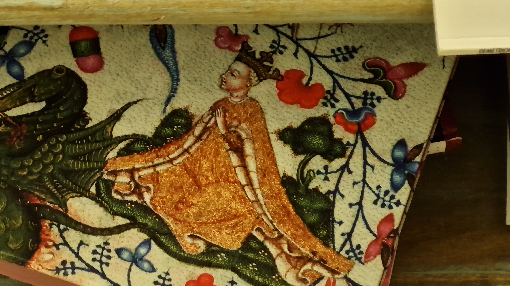
A beautiful embroidered book cover in the the Reading Corner
8 / 18
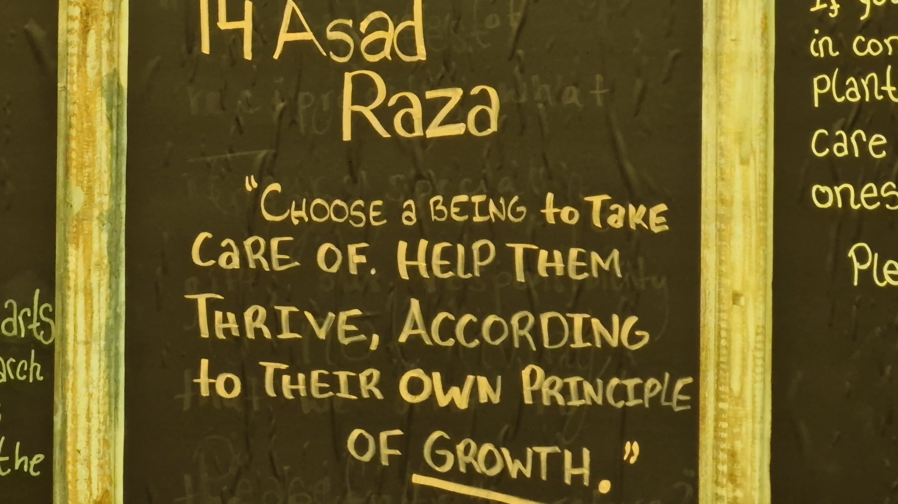
A quote on display at the reading corner; also the first shot of my video project :)
9 / 18
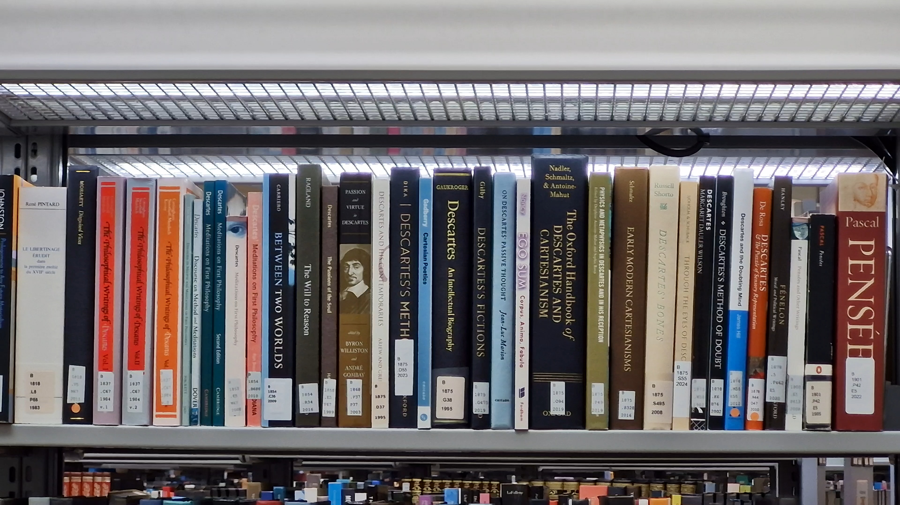
A shelf in the main library dedicated to Descartes
10 / 18
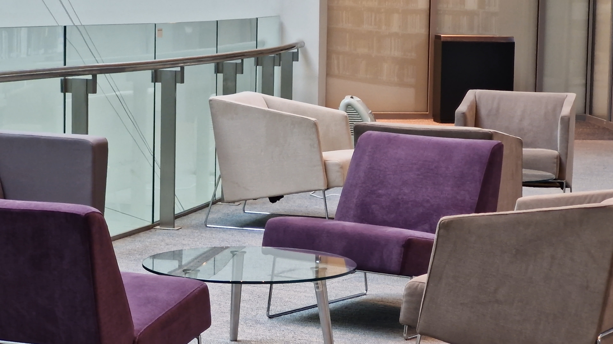
Minimalism in furniture at the library
11 / 18
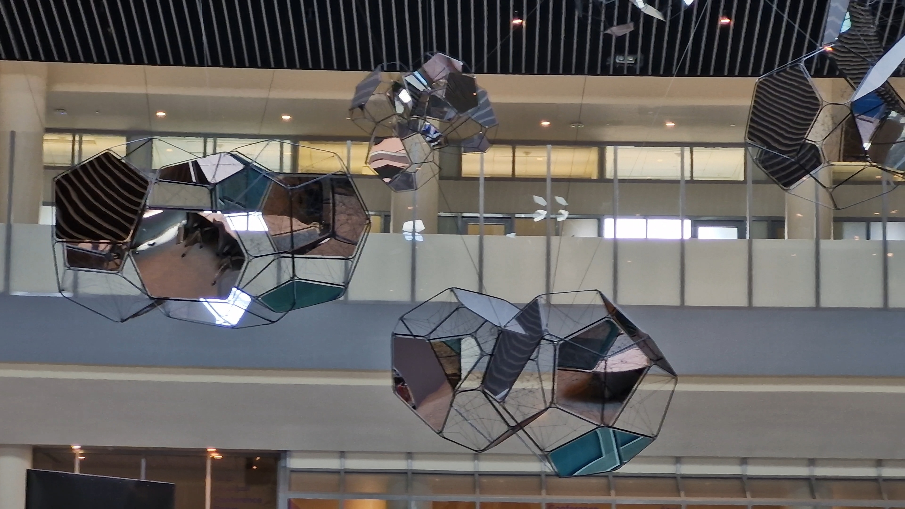
Chandeliers hanging under the skylight roof at the library
12 / 18
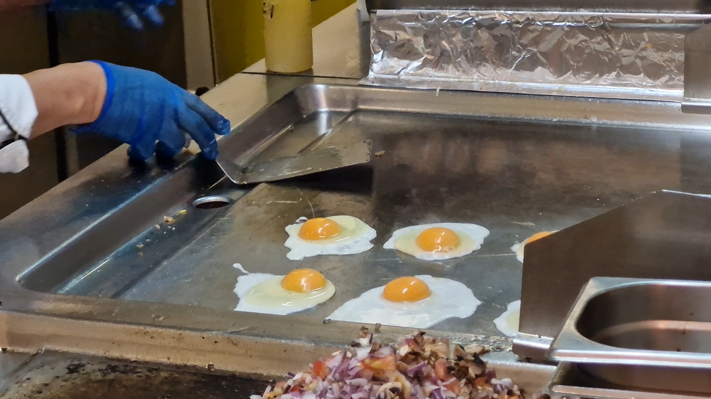
Steven making eggs at A la Brasa in D2; a favourite of many (including me)
13 / 18
A screen in the Arts Center featuring an interactive video feed from a camera
14 / 18
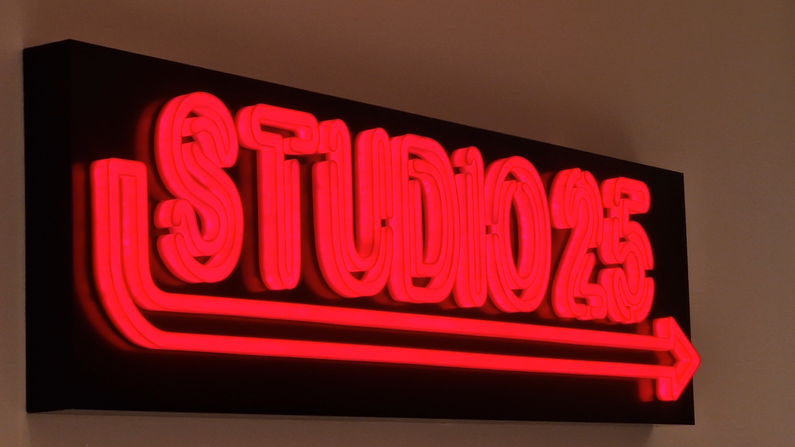
A neon sign inside the Arts Center
15 / 18
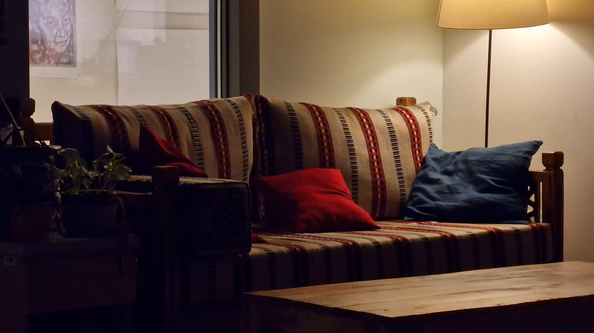
A cozy working space in the Interactive Media Lab
16 / 18
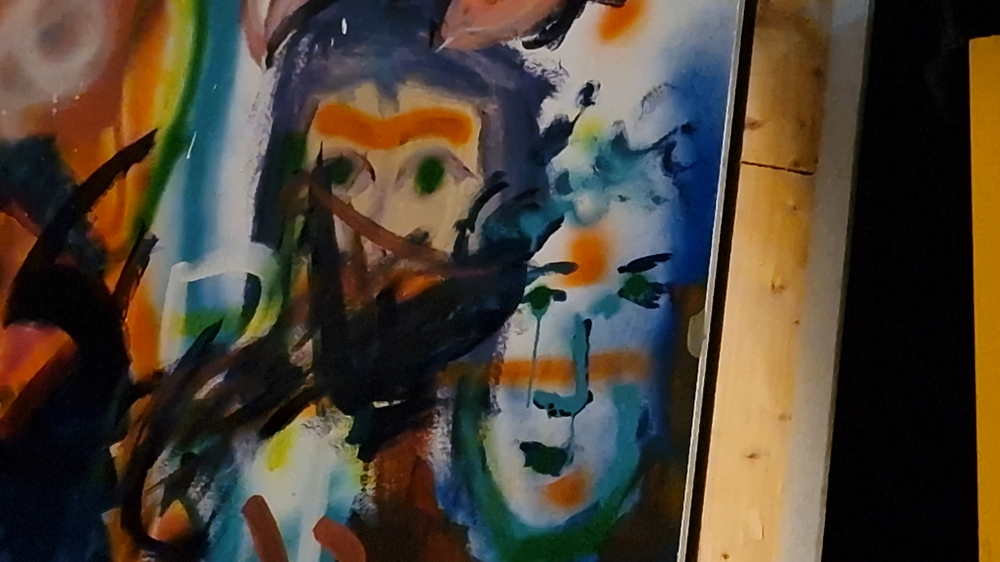
Artwork in the Arts Center
17 / 18
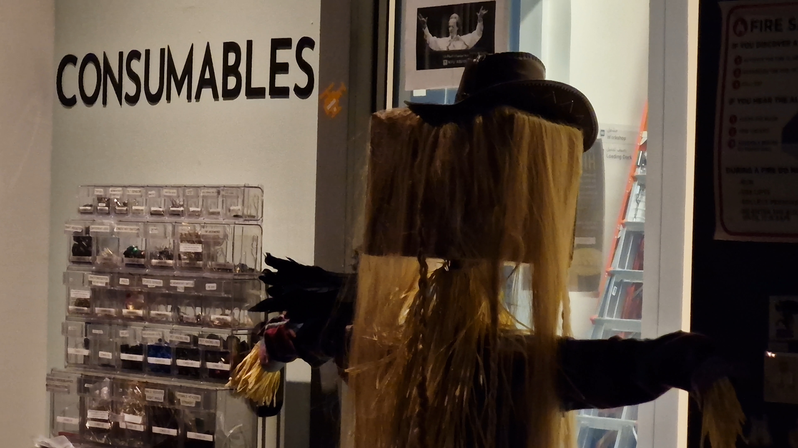
A scarecrow-like figure in the Interactive Media Lab
18 / 18
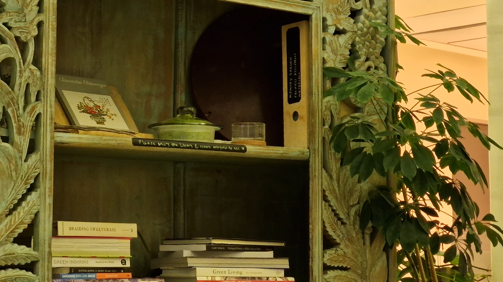
An antique bookshelf in the Reading Corner